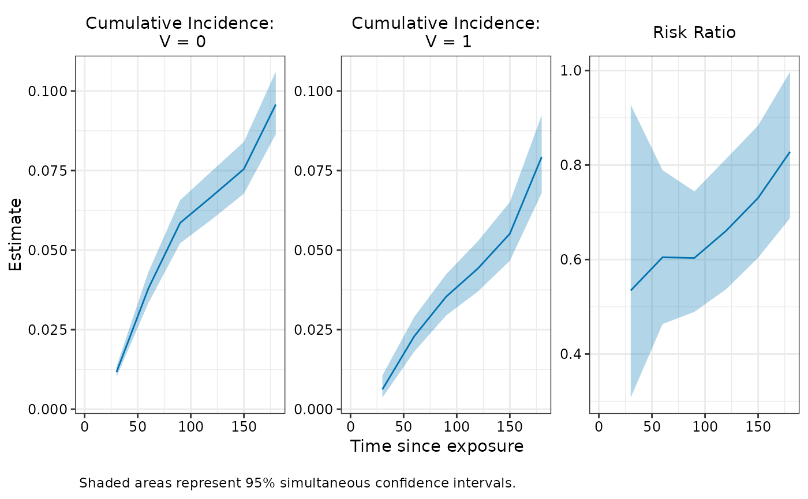

Add simultaneous confidence intervals to effectiveness fit
Source:R/add_simultaneous_ci.R
add_simultaneous_ci.RdComputes simultaneous confidence intervals, which maintain the specified coverage level across all evaluation timepoints jointly. This is useful for making inferences about the entire cumulative incidence or effectiveness curve.
Arguments
- object
An object of class
vefitcreated bynomatch()ormatching(). Mustcontain evaluations at at least 2 timepoints (
length(object$eval_times) > = 2),contain bootstrap samples (
keep_boot_samples = TRUEwhen fitting).
- seed
Integer seed to ensure reproducible critical values for simultaneous confidence intervals (relied on random number generation). Default is
NULL(no seed set).
Value
The original vefit object with the following modifications:
- estimates
Each matrix gets additional columns describing the simultaneous confidence interval bounds and construction:
simul_lower,simul_upper,simul_n- simul_z_star
Named vector containing the critical values used for each term
- simul_excluded_timepoints
Named list containing a vector of timepoints excluded from the simultaneous bands for each term due to insufficient bootstrap samples
Details
Critical values are computed using the bootstrap covariance structure across timepoints. If any timepoint has more than 5% missing bootstrap samples, it is excluded from the simultaneous band and a warning is issued.
Examples
# Fit model with bootstrap samples
fit <- nomatch(
data = simdata,
outcome_time = "Y",
outcome_status = "event",
exposure = "V",
exposure_time = "D_obs",
covariates = c("x1", "x2"),
eval_times = seq(30, 180, by = 30),
immune_lag = 14,
boot_reps = 100,
keep_boot_samples = TRUE
)
#> Bootstrapping 100 samples...
#> Time difference of 35.08048 secs
# Add simultaneous CIs
fit_simul <- add_simultaneous_ci(fit, seed = 123)
# Look at results
fit_simul
#>
#> Risk Ratio Estimates
#> ==================================================
#> Call: nomatch(data = simdata, outcome_time = "Y", outcome_status = "event",
#> exposure = "V", exposure_time = "D_obs", covariates = c("x1",
#> "x2"), immune_lag = 14, eval_times = seq(30, 180, by = 30),
#> boot_reps = 100, keep_boot_samples = TRUE)
#>
#> Result:
#> Timepoint Estimate 95% Wald CI: Lower 95% Wald CI: Upper Wald p-value
#> 1 30 0.534 0.346 0.826 3.63e-02
#> 2 60 0.605 0.480 0.762 8.15e-04
#> 3 90 0.603 0.499 0.730 4.25e-05
#> 4 120 0.661 0.557 0.784 1.00e-04
#> 5 150 0.731 0.628 0.849 4.62e-04
#> 6 180 0.828 0.721 0.950 1.45e-02
#> 95% Simul CI: Lower 95% Simul CI: Upper
#> 1 0.308 0.927
#> 2 0.451 0.810
#> 3 0.475 0.767
#> 4 0.533 0.820
#> 5 0.604 0.884
#> 6 0.695 0.986
#>
#> Use summary() for more details
#> Use plot() to visualize results
# Visualize
plot(fit_simul, ci_type = "simul")
